trackViewer Vignette: lollipopPlot
Jianhong Ou, Lihua Julie Zhu
5 September 2024
lollipopPlot.RmdAbstract
Visualize methylation or mutation sites along with annotation as track layers.
Lolliplot
Lolliplot is for the visualization of the methylation/variant/mutation data.
library(trackViewer)
SNP <- c(10, 12, 1400, 1402)
sample.gr <- GRanges("chr1", IRanges(SNP, width=1, names=paste0("snp", SNP)))
features <- GRanges("chr1", IRanges(c(1, 501, 1001),
width=c(120, 400, 405),
names=paste0("block", 1:3)))
lolliplot(sample.gr, features)
## More SNPs
SNP <- c(10, 100, 105, 108, 400, 410, 420, 600, 700, 805, 840, 1400, 1402)
sample.gr <- GRanges("chr1", IRanges(SNP, width=1, names=paste0("snp", SNP)))
lolliplot(sample.gr, features)
## Define the range
lolliplot(sample.gr, unname(features), ranges = GRanges("chr1", IRanges(104, 109)))Add the index labels in the node
Users can control the node labels one by one by setting metadata start with ‘node.label.’ Please note that for each node label, the node.label.gp must be a list to control the style of node labels. You can also simply use node.label.col, node.label.cex, node.label.fontsize, node.label.fontfamily, node.label.fontface, node.label.font to assign the node labels attributes.
sample.gr$node.label <- as.character(seq_along(sample.gr))
sample.gr$node.label.col <-
ifelse(sample.gr$alpha>0.5 | sample.gr$color==1, "white", "black")
sample.gr$node.label.cex <- sample.int(3, length(sample.gr), replace = TRUE)/2
lolliplot(sample.gr, features)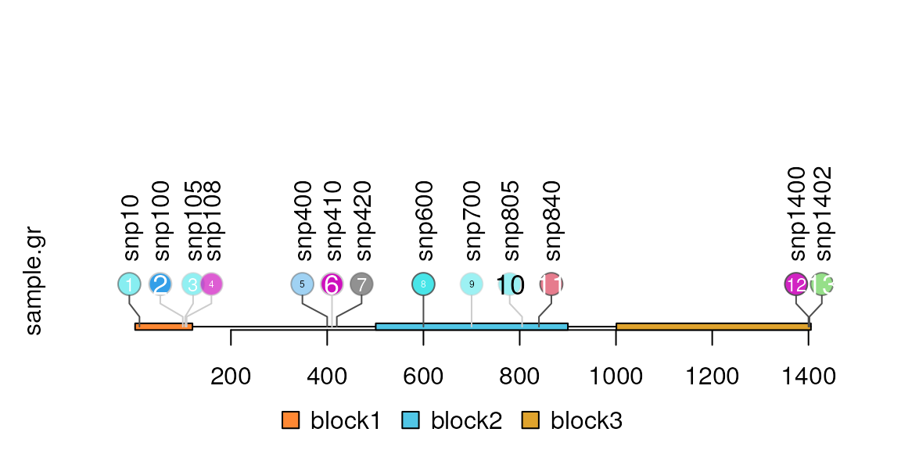
sample.gr$node.label.cex <- 1 ## change it back for pretty showcase.Change the height of the features
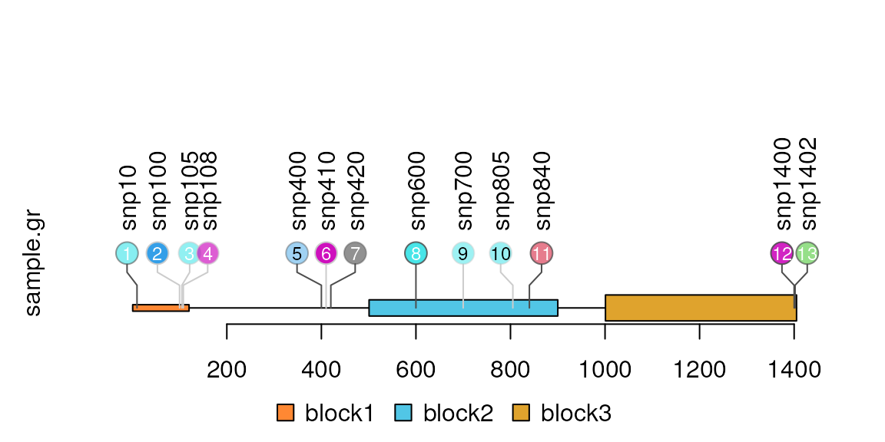
## Specifying the height and its unit
features$height <- list(unit(1/16, "inches"),
unit(3, "mm"),
unit(12, "points"))
lolliplot(sample.gr, features)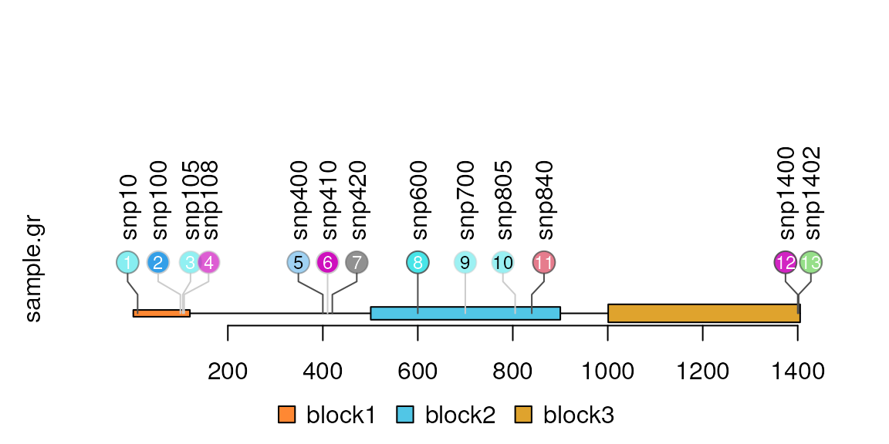
Plot multiple transcripts in the features
The metadata ‘featureLayerID’ are used for drawing features in different layers.
features.mul <- rep(features, 2)
features.mul$height[4:6] <- list(unit(1/8, "inches"),
unit(0.5, "lines"),
unit(.2, "char"))
features.mul$fill <- c("#FF8833", "#F9712A", "#DFA32D",
"#51C6E6", "#009DDA", "#4B9CDF")
end(features.mul)[5] <- end(features.mul[5])+50
features.mul$featureLayerID <-
paste("tx", rep(1:2, each=length(features)), sep="_")
names(features.mul) <-
paste(features.mul$featureLayerID,
rep(1:length(features), 2), sep="_")
lolliplot(sample.gr, features.mul)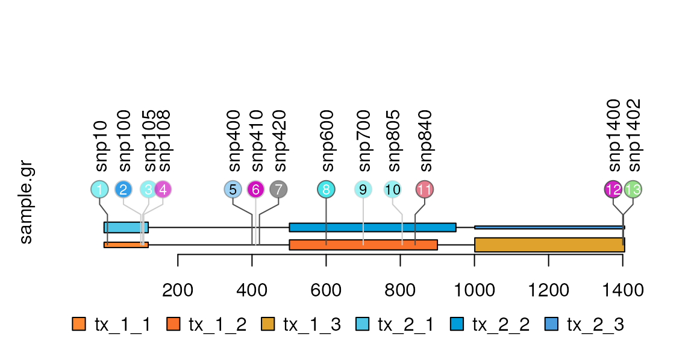
## One name per transcript
names(features.mul) <- features.mul$featureLayerID
lolliplot(sample.gr, features.mul)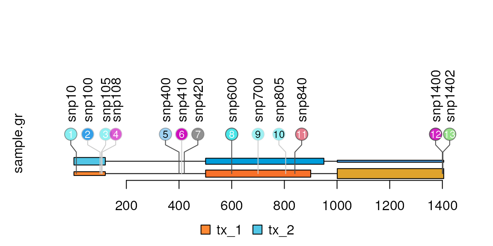
Change the height of a lollipop plot
#Note: the score value is an integer less than 10
sample.gr$score <- sample.int(5, length(sample.gr), replace = TRUE)
lolliplot(sample.gr, features)
##Remove y-axis
lolliplot(sample.gr, features, yaxis=FALSE)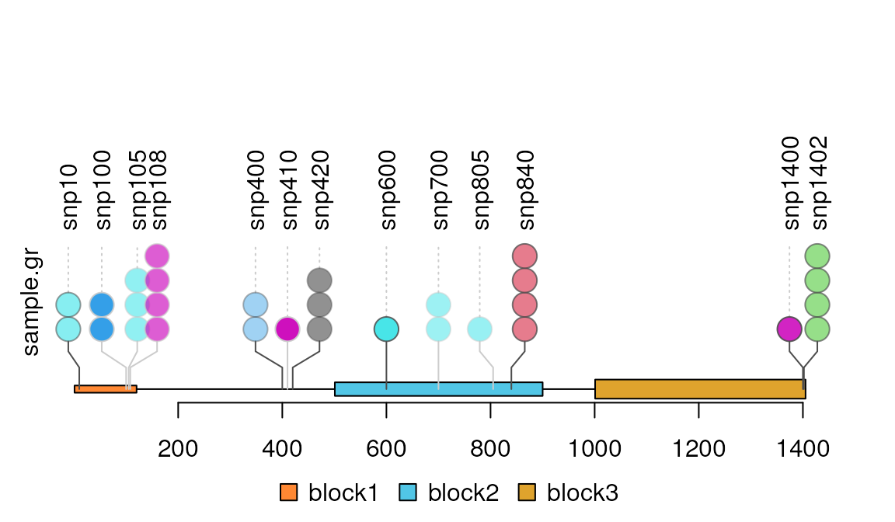
#Try a score value greater than 10
sample.gr$score <- sample.int(15, length(sample.gr), replace=TRUE)
sample.gr$node.label <- as.character(sample.gr$score)
lolliplot(sample.gr, features)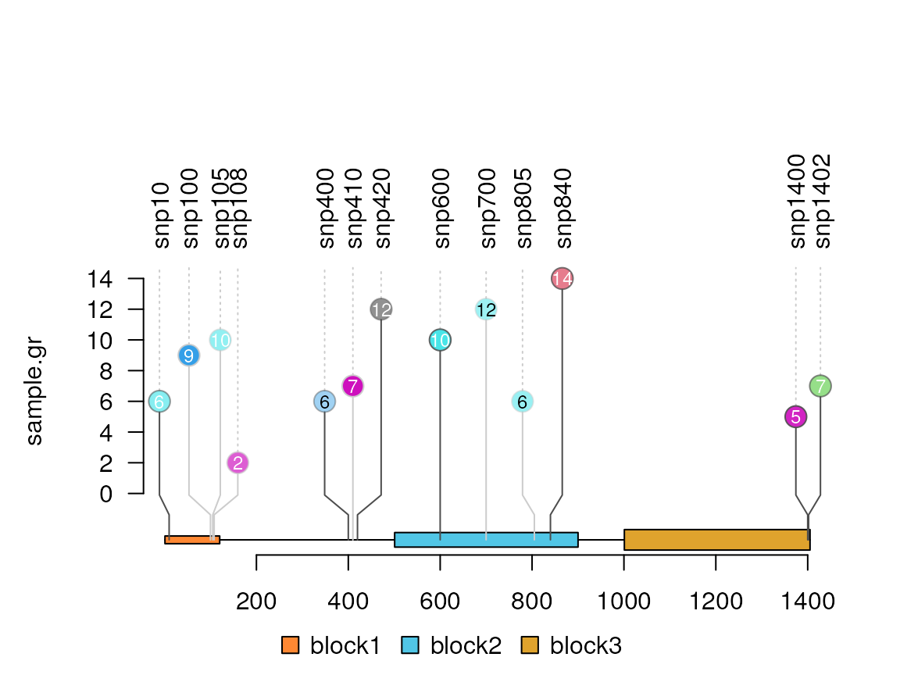
#increase the cutoff value of style switch.
lolliplot(sample.gr, features, lollipop_style_switch_limit=15)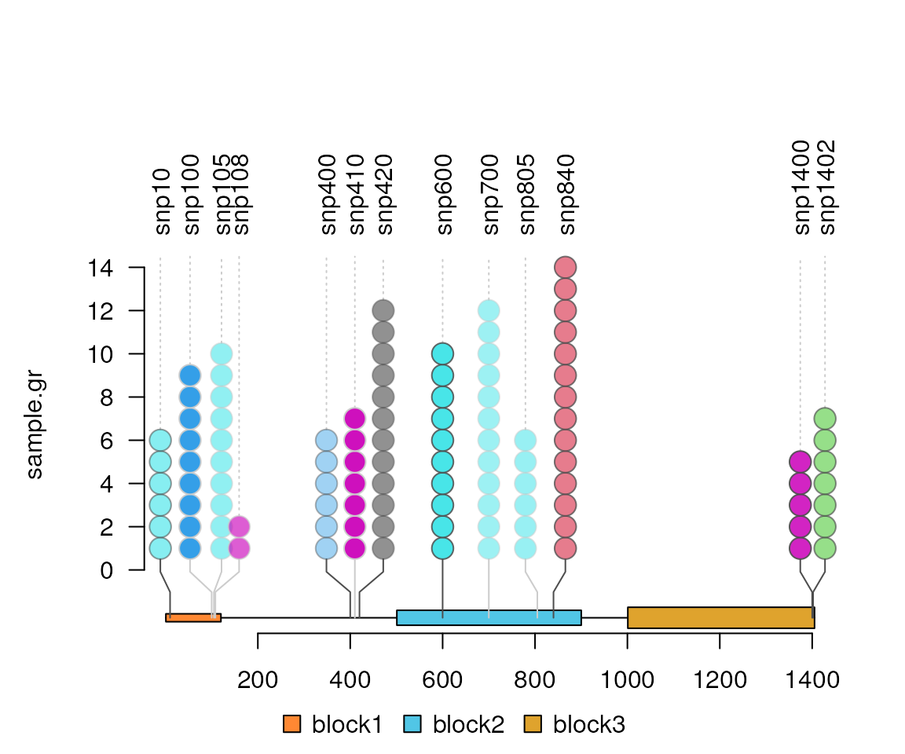
#Try a float numeric score
sample.gr$score <- runif(length(sample.gr))*10
sample.gr$node.label <- as.character(round(sample.gr$score, digits = 1))
lolliplot(sample.gr, features)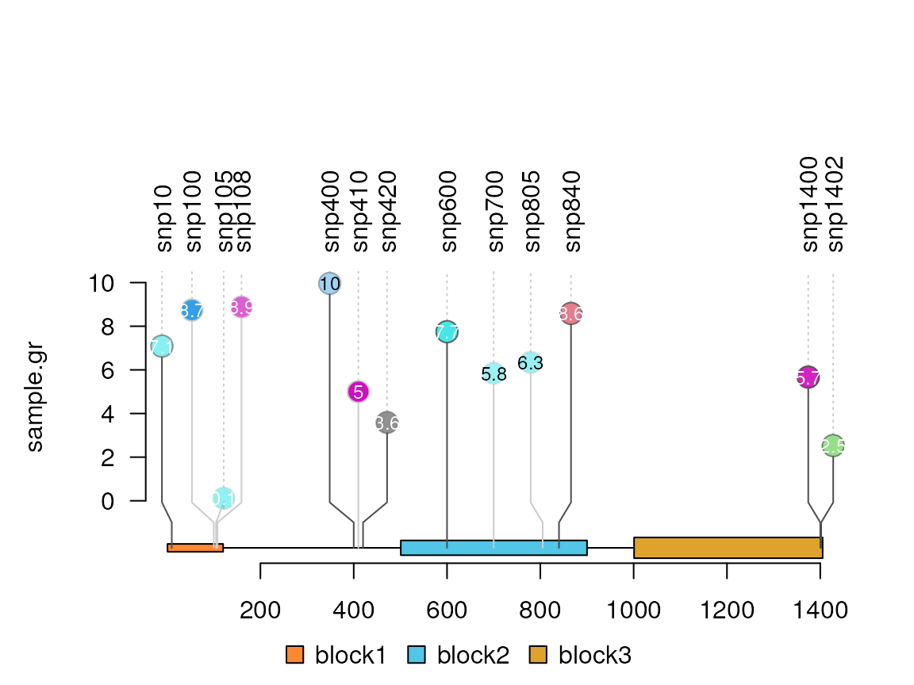
# Score should not be smaller than 1
# remove the alpha for following samples
sample.gr$alpha <- NULLCustomize the x-axis label position
Customize the y-axis label position
#yaxis <- c(0, 5) ## define the position
#lolliplot(sample.gr, features, yaxis=yaxis)
yaxis <- c(0, 5, 10, 15) ## define the position
names(yaxis) <- yaxis # define the labels
names(yaxis)[3] <- "y-axis"
lolliplot(sample.gr, features, yaxis=yaxis)
Jitter the label
sample.gr$dashline.col <- sample.gr$color
lolliplot(sample.gr, features, jitter="label")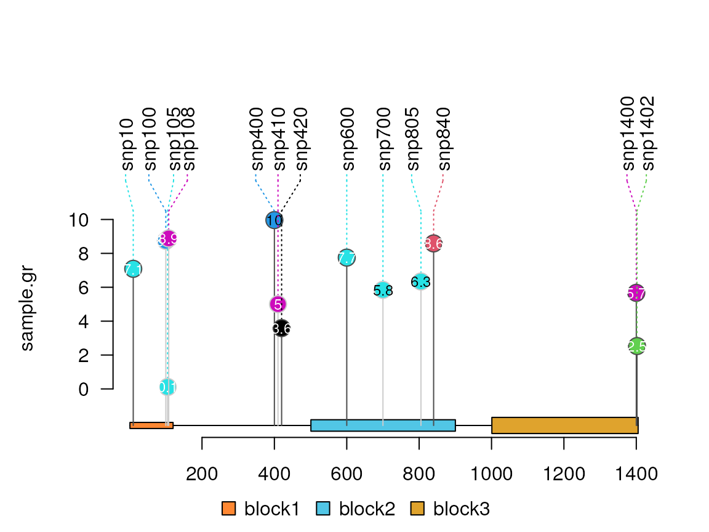
Add a legend
legend <- 1:6 ## legend fill color
names(legend) <- paste0("legend", letters[1:6]) ## legend labels
lolliplot(sample.gr, features, legend=legend)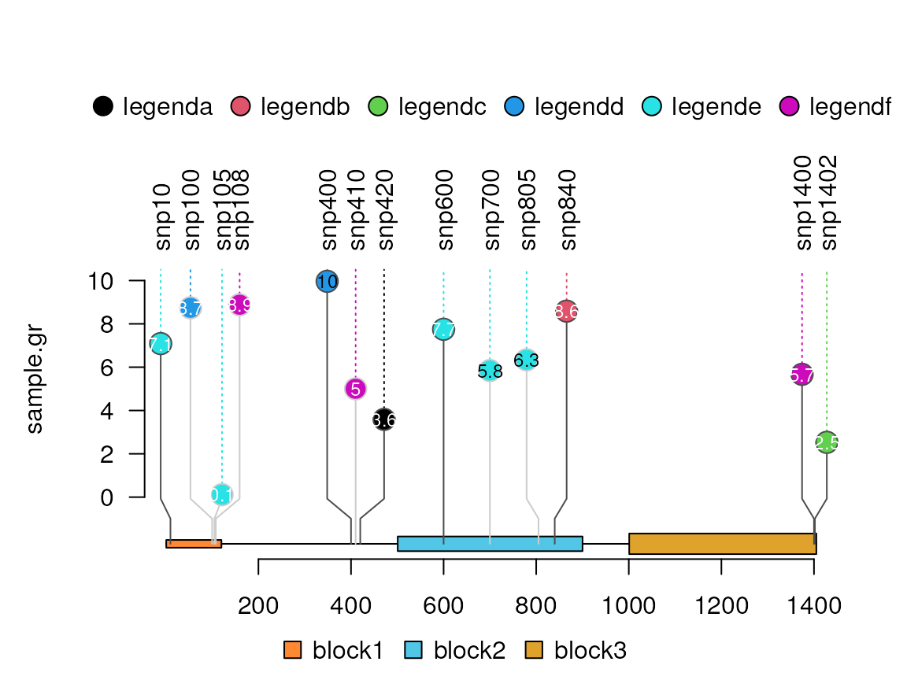
## use list to define more attributes. see ?grid::gpar to get more details.
legend <- list(labels=paste0("legend", LETTERS[1:6]),
col=palette()[6:1],
fill=palette()[legend])
lolliplot(sample.gr, features, legend=legend)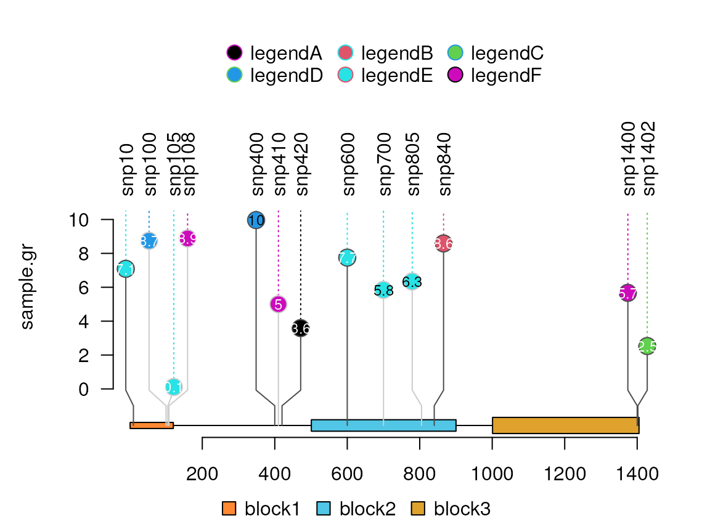
## if you have multiple tracks, please try to set the legend by list.
## see more examples in the section [Plot multiple samples](#plot-multiple-samples)
legendList <- list(legend)
lolliplot(sample.gr, features, legend=legendList)
# from version 1.21.8, users can also try to set legend
# as a column name in the metadata of GRanges.
sample.gr.newlegend <- sample.gr
sample.gr.newlegend$legend <- LETTERS[sample.gr$color]
lolliplot(sample.gr.newlegend, features, legend="legend")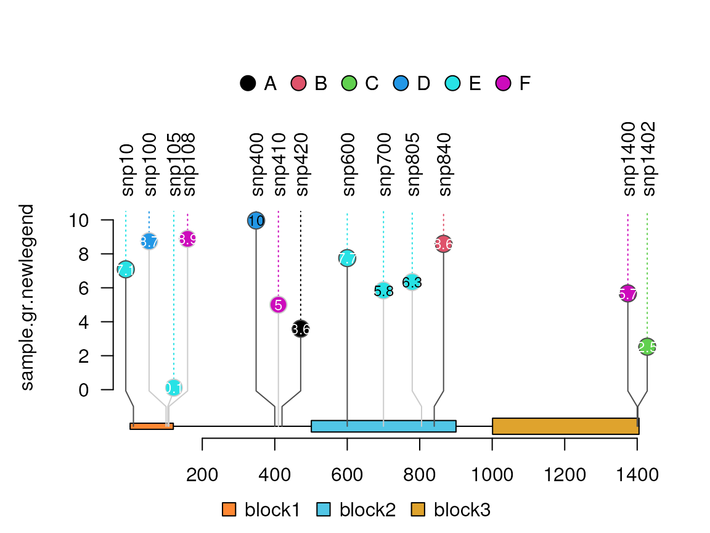
# from version 1.41.6, users can set the legend position to right
lolliplot(sample.gr, features, legend=legend,
legendPosition = list(position='right',
width=unit(1, 'inch')))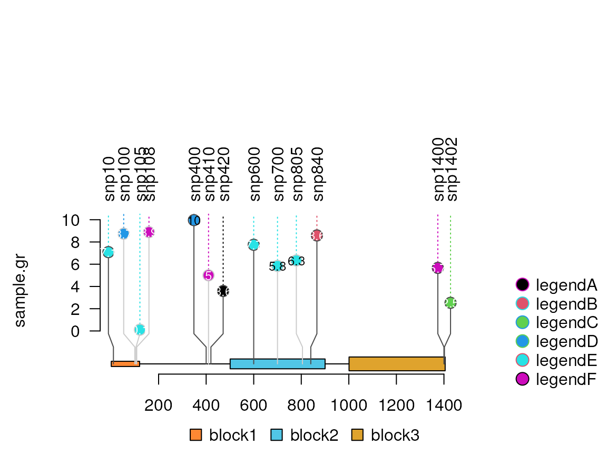
## use ncol or nrow to control the legend layout.
legendList[[1]]$ncol <- 2 # if legend is not a list of list, use legend$ncol <- 2
lolliplot(sample.gr, features, legend=legendList, legendPosition = 'right')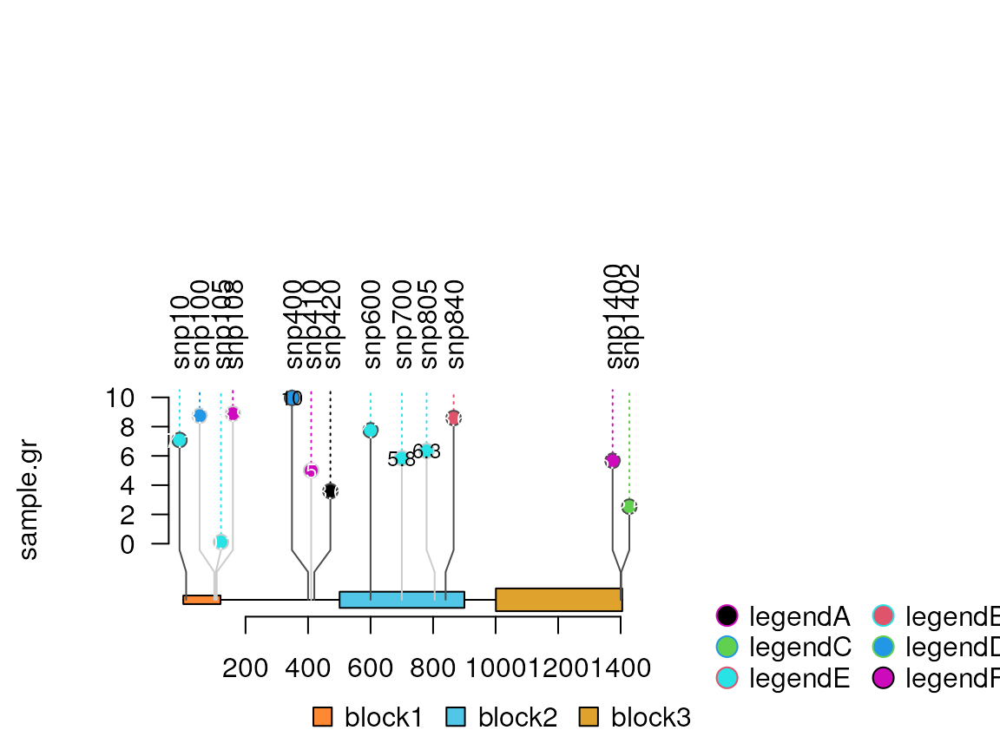
Control the labels
Users can control the parameters of labels by naming the metadata start as label.parameter such as label.parameter.rot or label.parameter.gp. Note: label.parameter.label can be used to plot snp labels other than the names of inputs. The parameter is used for grid.text.
sample.gr.rot <- sample.gr
sample.gr.rot$label.parameter.rot <- 45
lolliplot(sample.gr.rot, features, legend=legend)
sample.gr.rot$label.parameter.rot <- 60
sample.gr.rot$label.parameter.col <- "brown"
## change the label text into user-defined names other than names of the sample.gr
sample.gr.rot$label.parameter.label <- names(sample.gr)
random_ids <- sample(seq_along(sample.gr), 5)
sample.gr.rot$label.parameter.label[random_ids] <-
paste("new label", random_ids)
random_ids <- sample(seq_along(sample.gr), 2)
sample.gr.rot$label.parameter.label[random_ids] <- NA ## remove some labels
lolliplot(sample.gr.rot, features, legend=legend)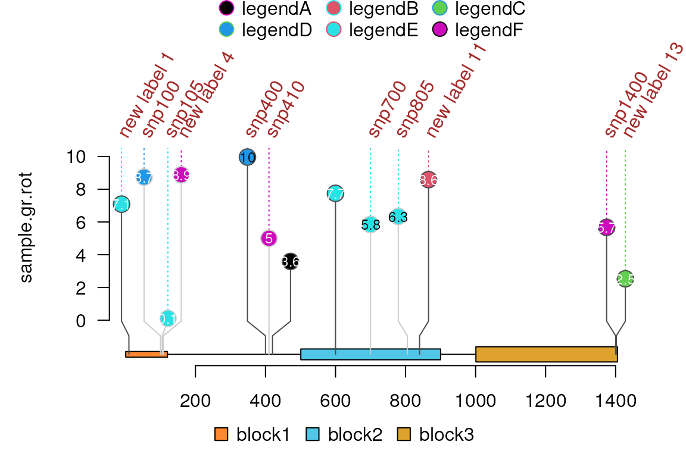
## try different colors
sample.gr.rot$label.parameter.col <- sample.int(7,
length(sample.gr),
replace = TRUE)
sample.gr.rot$label.parameter.draw <- TRUE
sample.gr.rot$label.parameter.draw[[1]] <- FALSE ## another method to remove the first label
lolliplot(sample.gr.rot, features, legend=legend)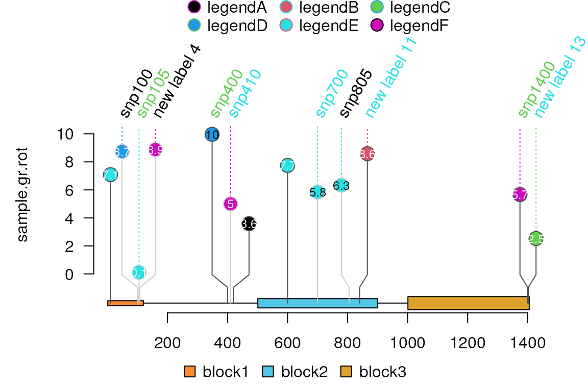
Users can also control the labels one by one by setting label.parameter.gp. Please note that for each label, the label.parameter.gp must be a list.
label.parameter.gp.brown <- gpar(col="brown")
label.parameter.gp.blue <- gpar(col="blue")
label.parameter.gp.red <- gpar(col="red")
sample.gr$label.parameter.gp <- sample(list(label.parameter.gp.blue,
label.parameter.gp.brown,
label.parameter.gp.red),
length(sample.gr), replace = TRUE)
lolliplot(sample.gr, features)User can write the labels of the features directly on them and not in
the legend by set the parameter label_on_feature to
TRUE.
lolliplot(sample.gr, features, label_on_feature=TRUE)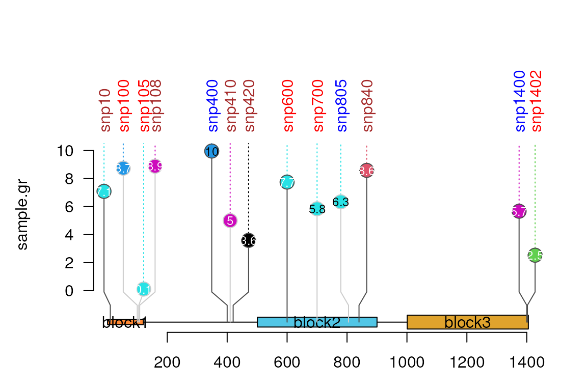
Please note that lolliplot does not support any parameters to set the title and xlab. If you want to add the title and xlab, please try to add them by grid.text.
lolliplot(sample.gr.rot, features, legend=legend, ylab="y label here")
grid.text("label of x-axis here", x=.5, y=.01, just="bottom")
grid.text("title here", x=.5, y=.98, just="top",
gp=gpar(cex=1.5, fontface="bold"))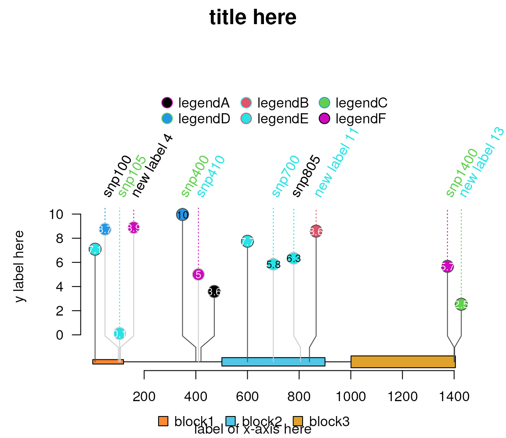
Start from version 1.33.3, lolliplot
can also plot motifs as labels. The parameters are controlled by the
parameters of labels by naming the metadata start as label.parameter
such as label.parameter.pfm or label.parameter.font. The parameter is
used for plotMotifLogoA.
library(motifStack)
pcms<-readPCM(file.path(find.package("motifStack"), "extdata"),"pcm$")
sample.gr.rot$label.parameter.pfm <- pcms[sample(seq_along(pcms),
length(sample.gr.rot),
replace = TRUE)]
lolliplot(sample.gr.rot, features, legend=legend)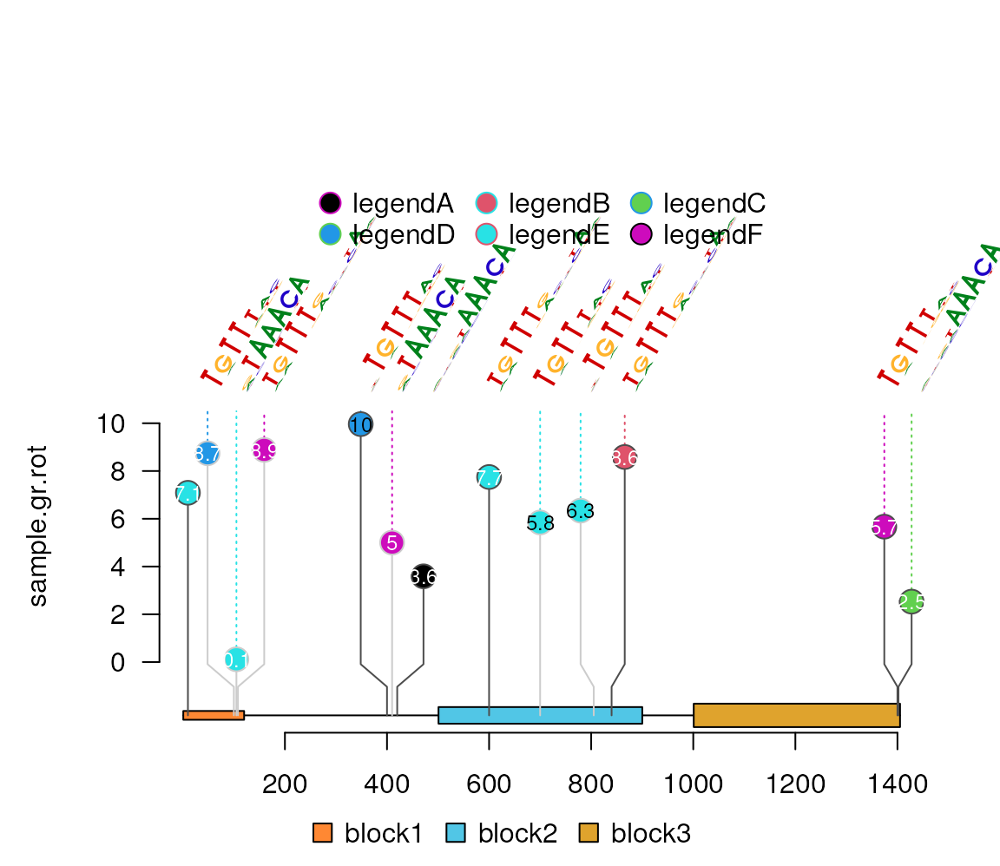
Change the lolliplot type
Change the shape for “circle” plot
## shape must be "circle", "square", "diamond", "triangle_point_up", or "triangle_point_down"
available.shapes <- c("circle", "square", "diamond",
"triangle_point_up", "triangle_point_down")
sample.gr$shape <- sample(available.shapes, size = length(sample.gr), replace = TRUE)
sample.gr$legend <- paste0("legend", as.numeric(factor(sample.gr$shape)))
lolliplot(sample.gr, features, type="circle", legend = "legend")
sample.gr.mul.shape <- sample.gr
sample.gr.mul.shape$score <- ceiling(sample.gr.mul.shape$score)
sample.gr.mul.shape$shape <- lapply(sample.gr.mul.shape$score, function(s){
sample(available.shapes, size = s, replace = TRUE)
})
sample.gr.mul.shape$color <- lapply(sample.gr.mul.shape$score, function(s){
sample.int(7, size = s, replace = TRUE)
})
lolliplot(sample.gr.mul.shape, features, type="circle",
lollipop_style_switch_limit = max(sample.gr.mul.shape$score))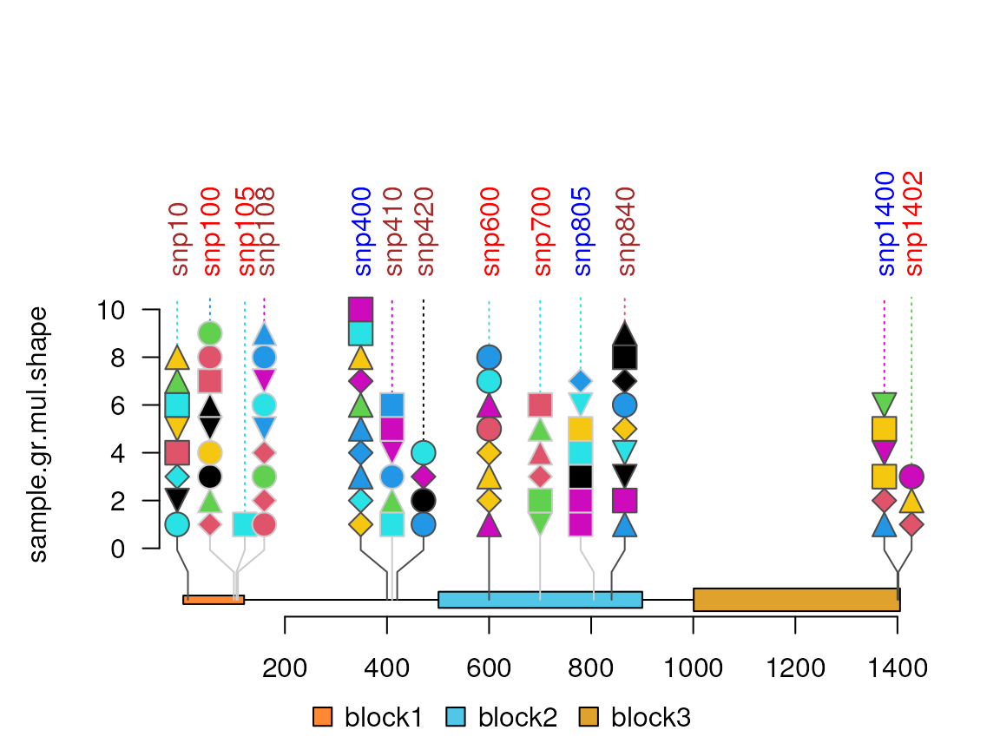
Google pin
lolliplot(sample.gr, features, type="pin")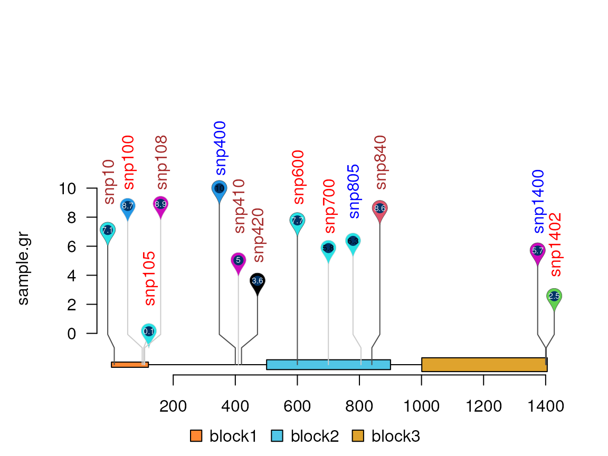
sample.gr$color <- lapply(sample.gr$color, function(.ele) c(.ele, sample.int(6, 1)))
sample.gr$border <- sample.int(6, length(SNP), replace=TRUE)
lolliplot(sample.gr, features, type="pin")Flag
sample.gr.flag <- sample.gr
sample.gr.flag$label <- names(sample.gr) ## move the names to metadata:label
names(sample.gr.flag) <- NULL
#lolliplot(sample.gr.flag, features,
# ranges=GRanges("chr1", IRanges(0, 1600)), ## use ranges to leave more space on the right margin.
# type="flag")
## change the flag rotation angle
sample.gr.flag$node.label.rot <- 15
sample.gr.flag$node.label.rot[c(2, 5)] <- c(60, -15)
sample.gr.flag$label[7] <- "I have a long name"
sample.gr.flag$node.label.cex <- 1
sample.gr.flag$node.label.cex[4] <- 2
lolliplot(sample.gr.flag, features,
ranges=GRanges("chr1", IRanges(0, 1600)),## use ranges to leave more space on the right margin.
type="flag")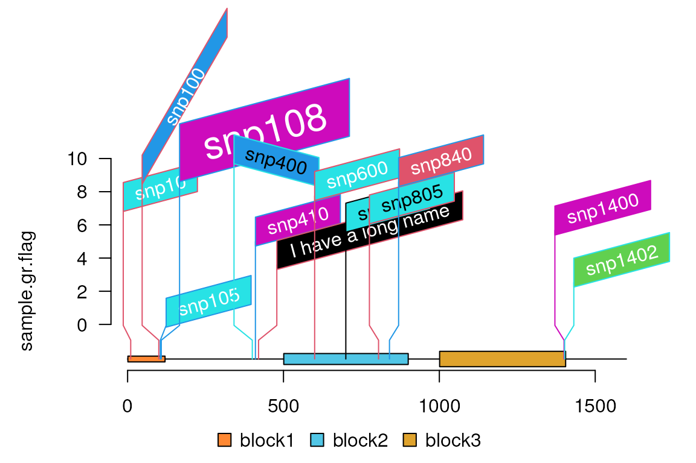
Pie plot
sample.gr$score <- NULL ## must be removed, because pie will consider all the numeric columns except column "color", "fill", "alpha", "shape", "lwd", "id" and "id.col".
sample.gr$label <- NULL
sample.gr$node.label.col <- NULL
x <- sample.int(100, length(SNP))
sample.gr$value1 <- x
sample.gr$value2 <- 100 - x # for pie plot, 2 value columns are required.
## the length of the color should be no less than that of value1 or value2
sample.gr$color <- rep(list(c("#87CEFA", '#98CE31')), length(SNP))
sample.gr$border <- "gray30"
lolliplot(sample.gr, features, type="pie")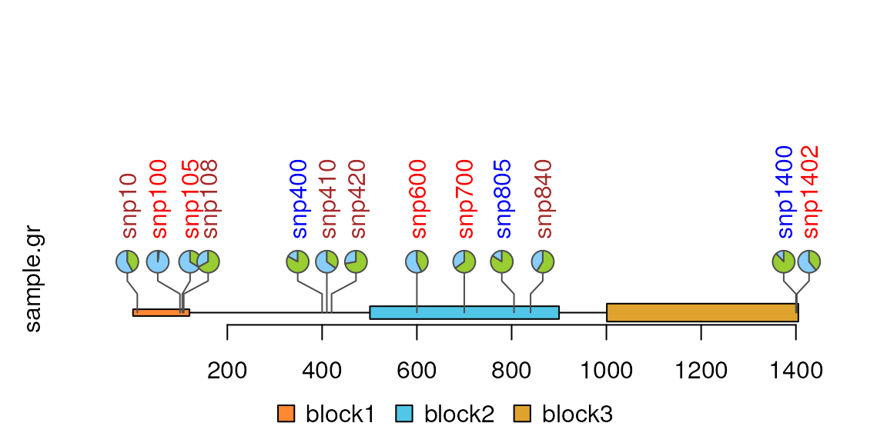
Plot multiple samples
Multiple layers
SNP2 <- sample(4000:8000, 30)
x2 <- sample.int(100, length(SNP2), replace=TRUE)
sample2.gr <- GRanges("chr3", IRanges(SNP2, width=1, names=paste0("snp", SNP2)),
value1=x2, value2=100-x2)
sample2.gr$color <- rep(list(c('#DB7575', '#FFD700')), length(SNP2))
sample2.gr$border <- "gray30"
features2 <- GRanges("chr3", IRanges(c(5001, 5801, 7001),
width=c(500, 500, 405),
names=paste0("block", 4:6)),
fill=c("orange", "gray30", "lightblue"),
height=unit(c(0.5, 0.3, 0.8), "cm"))
legends <- list(list(labels=c("WT", "MUT"), fill=c("#87CEFA", '#98CE31')),
list(labels=c("WT", "MUT"), fill=c('#DB7575', '#FFD700')))
lolliplot(list(A=sample.gr, B=sample2.gr),
list(x=features, y=features2),
type="pie", legend=legends)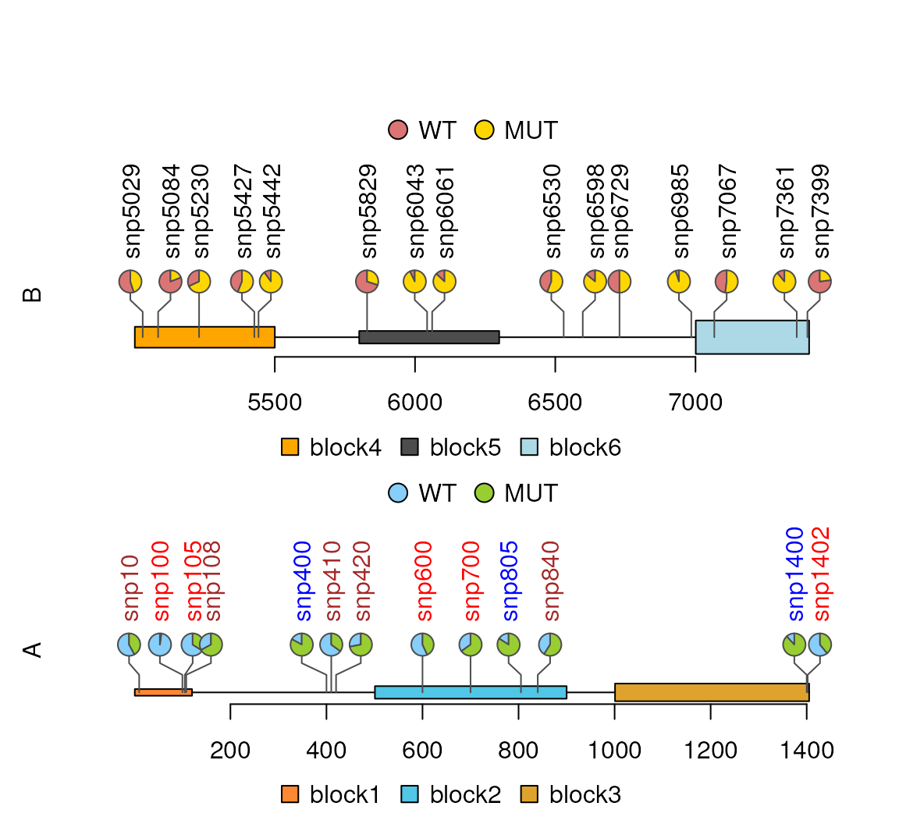
Different layouts are also possible.
sample2.gr$score <- sample2.gr$value1 ## The circle layout needs the score column
lolliplot(list(A=sample.gr, B=sample2.gr),
list(x=features, y=features2),
type=c("pie", "circle"), legend=legends)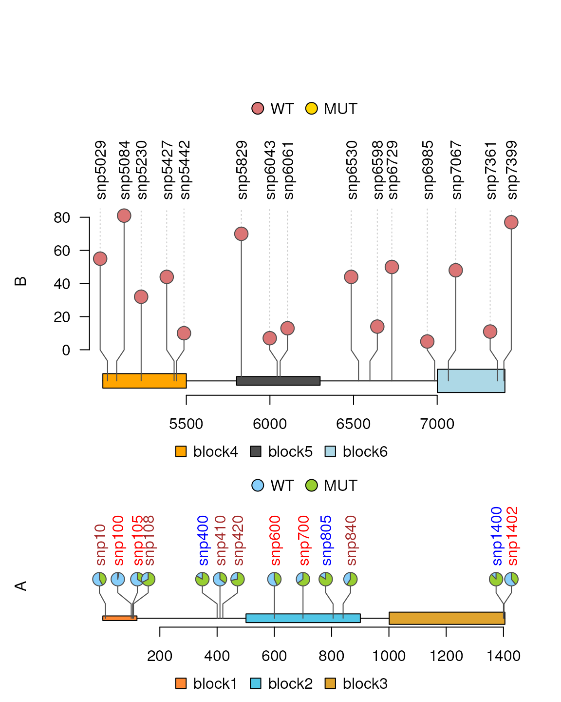
pie.stack layout
rand.id <- sample.int(length(sample.gr), 3*length(sample.gr), replace=TRUE)
rand.id <- sort(rand.id)
sample.gr.mul.patient <- sample.gr[rand.id]
## pie.stack require metadata "stack.factor", and the metadata can not be
## stack.factor.order or stack.factor.first
len.max <- max(table(rand.id))
stack.factors <- paste0("patient", formatC(1:len.max,
width=nchar(as.character(len.max)),
flag="0"))
sample.gr.mul.patient$stack.factor <-
unlist(lapply(table(rand.id), sample, x=stack.factors))
sample.gr.mul.patient$value1 <-
sample.int(100, length(sample.gr.mul.patient), replace=TRUE)
sample.gr.mul.patient$value2 <- 100 - sample.gr.mul.patient$value1
patient.color.set <- as.list(as.data.frame(rbind(rainbow(length(stack.factors)),
"#FFFFFFFF"),
stringsAsFactors=FALSE))
names(patient.color.set) <- stack.factors
sample.gr.mul.patient$color <-
patient.color.set[sample.gr.mul.patient$stack.factor]
legend <- list(labels=stack.factors, col="gray80",
fill=sapply(patient.color.set, `[`, 1))
## remove one mutation label
sample.gr.mul.patient$label.parameter.draw <- TRUE
sample.gr.mul.patient$label.parameter.draw[
names(sample.gr.mul.patient)==
sample(unique(names(sample.gr.mul.patient)), 1)] <-
FALSE
lolliplot(sample.gr.mul.patient, features, type="pie.stack",
legend=legend, dashline.col="gray")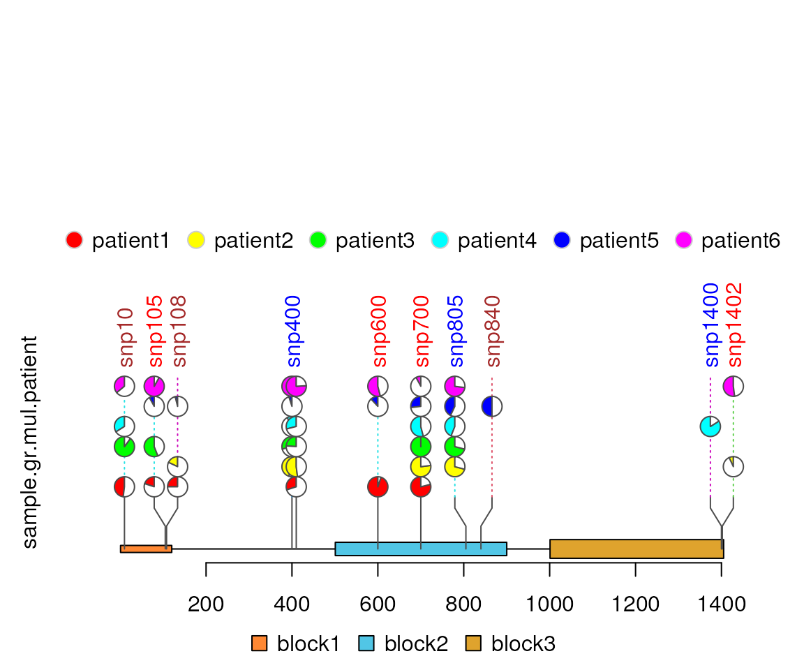
EMBL-EBI Proteins API
Following code will show how to use EBI Proteins REST API to get annotations of protein domains.
library(httr) # load library to get data from REST API
APIurl <- "https://www.ebi.ac.uk/proteins/api/" # base URL of the API
taxid <- "9606" # human tax ID
gene <- "TP53" # target gene
orgDB <- "org.Hs.eg.db" # org database to get the uniprot accession id
eid <- mget("TP53", get(sub(".db", "SYMBOL2EG", orgDB)))[[1]]
chr <- mget(eid, get(sub(".db", "CHR", orgDB)))[[1]]
accession <- unlist(lapply(eid, function(.ele){
mget(.ele, get(sub(".db", "UNIPROT", orgDB)))
}))
stopifnot(length(accession)<=20) # max number of accession is 20
tryCatch({ ## in case the internet connection does not work
featureURL <- paste0(APIurl,
"features?offset=0&size=-1&reviewed=true",
"&types=DNA_BIND%2CMOTIF%2CDOMAIN",
"&taxid=", taxid,
"&accession=", paste(accession, collapse = "%2C")
)
response <- GET(featureURL)
if(!http_error(response)){
content <- httr::content(response)
content <- content[[1]]
acc <- content$accession
sequence <- content$sequence
gr <- GRanges(chr, IRanges(1, nchar(sequence)))
domains <- do.call(rbind, content$features)
domains <- GRanges(chr, IRanges(as.numeric(domains[, "begin"]),
as.numeric(domains[, "end"]),
names = domains[, "description"]))
names(domains)[1] <- "DNA_BIND" ## this is hard coding.
domains$fill <- 1+seq_along(domains)
domains$height <- 0.04
## GET variations. This part can be replaced by user-defined data.
variationURL <- paste0(APIurl,
"variation?offset=0&size=-1",
"&sourcetype=uniprot&dbtype=dbSNP",
"&taxid=", taxid,
"&accession=", acc)
response <- GET(variationURL)
if(!http_error(response)){
content <- httr::content(response)
content <- content[[1]]
keep <- sapply(content$features, function(.ele) length(.ele$evidences)>2 && # filter the data by at least 2 evidences
!grepl("Unclassified", .ele$clinicalSignificances)) # filter the data by classified clinical significances.
nkeep <- c("wildType", "alternativeSequence", "begin", "end",
"somaticStatus", "consequenceType", "score")
content$features <- lapply(content$features[keep], function(.ele){
.ele$score <- length(.ele$evidences)
unlist(.ele[nkeep])
})
variation <- do.call(rbind, content$features)
variation <-
GRanges(chr,
IRanges(as.numeric(variation[, "begin"]),
width = 1,
names = paste0(variation[, "wildType"],
variation[, "begin"],
variation[, "alternativeSequence"])),
score = as.numeric(variation[, "score"]),
color = as.numeric(factor(variation[, "consequenceType"]))+1)
variation$label.parameter.gp <- gpar(cex=.5)
lolliplot(variation, domains, ranges = gr, ylab = "# evidences", yaxis = FALSE)
}else{
message("Can not get variations. http error")
}
}else{
message("Can not get features. http error")
}
},error=function(e){
message(e)
},warning=function(w){
message(w)
},interrupt=function(i){
message(i)
})Variant Call Format (VCF) data
library(VariantAnnotation)
library(TxDb.Hsapiens.UCSC.hg19.knownGene)
library(org.Hs.eg.db)
fl <- system.file("extdata", "chr22.vcf.gz", package="VariantAnnotation")
gr <- GRanges("22", IRanges(50968014, 50970514, names="TYMP"))
if(.Platform$OS.type!="windows"){# This line is for avoiding error from VariantAnnotation in the windows platform, which will be removed when VariantAnnotation's issue gets fixed.
tab <- TabixFile(fl)
vcf <- readVcf(fl, "hg19", param=gr)
mutation.frequency <- rowRanges(vcf)
mcols(mutation.frequency) <- cbind(mcols(mutation.frequency),
VariantAnnotation::info(vcf))
mutation.frequency$border <- "gray30"
mutation.frequency$color <-
ifelse(grepl("^rs", names(mutation.frequency)), "lightcyan", "lavender")
## Plot Global Allele Frequency based on AC/AN
mutation.frequency$score <- mutation.frequency$AF*100
seqlevelsStyle(mutation.frequency) <- "UCSC"
if(!grepl("chr", seqlevels(mutation.frequency)[1])){
seqlevels(mutation.frequency) <-
paste0("chr", seqlevels(mutation.frequency))
}
}
seqlevelsStyle(gr) <- "UCSC"
trs <- geneModelFromTxdb(TxDb.Hsapiens.UCSC.hg19.knownGene,
org.Hs.eg.db,
gr=gr)
features <- c(range(trs[[1]]$dat), range(trs[[5]]$dat))
names(features) <- c(trs[[1]]$name, trs[[5]]$name)
features$fill <- c("lightblue", "mistyrose")
features$height <- c(.02, .04)
if(.Platform$OS.type!="windows"){
lolliplot(mutation.frequency, features, ranges=gr)
}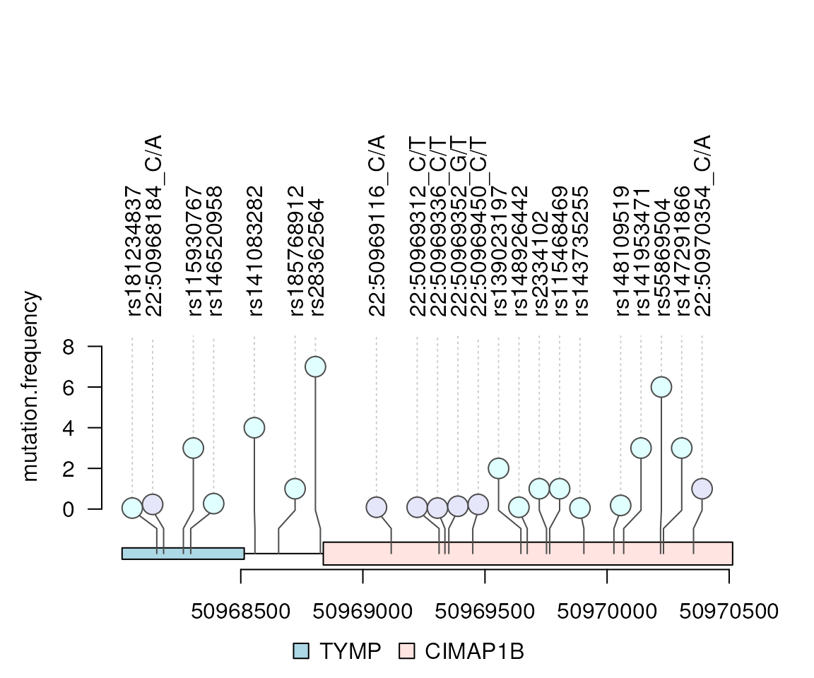
Methylation data
library(rtracklayer)
session <- browserSession()
query <- ucscTableQuery(session,
table="wgEncodeHaibMethylRrbs",
range=GRangesForUCSCGenome("hg19",
seqnames(gr),
ranges(gr)))
tableName(query) <- tableNames(query)[1]
methy <- track(query)
methy <- GRanges(methy)
lolliplot(methy, features, ranges=gr, type="pin")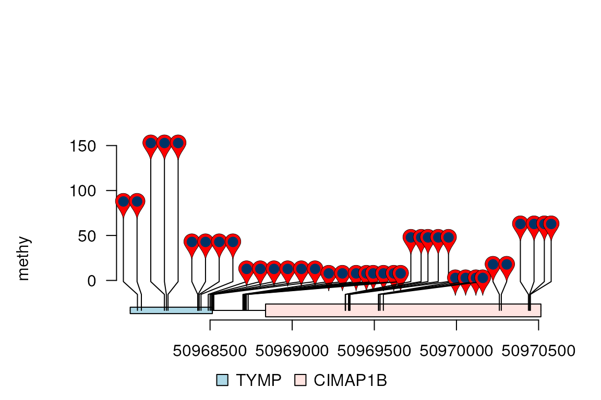
Change the node size
In the above example, some of the nodes overlap each other. To change the node size, cex prameter could be used.
methy$lwd <- .5
lolliplot(methy, features, ranges=gr, type="pin", cex=.5)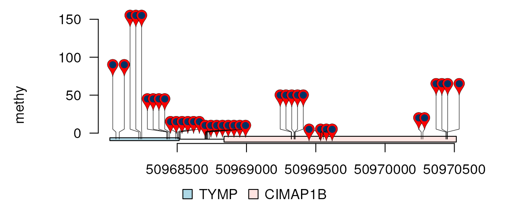
#lolliplot(methy, features, ranges=gr, type="circle", cex=.5)
methy$score2 <- max(methy$score) - methy$score
lolliplot(methy, features, ranges=gr, type="pie", cex=.5)
## We can change it one by one
methy$cex <- runif(length(methy))
lolliplot(methy, features, ranges=gr, type="pin")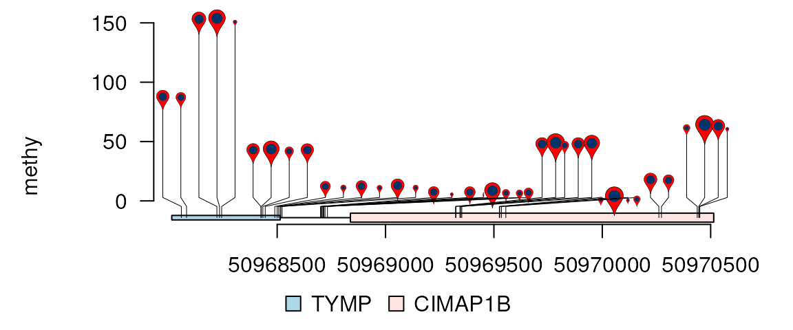
#lolliplot(methy, features, ranges=gr, type="circle")Change the scale of the x-axis (xscale)
In the above examples, some of the nodes are moved too far from the original coordinates. To rescale, the x-axis could be reset as below.
methy$cex <- 1
lolliplot(methy, features, ranges=gr, rescale = TRUE)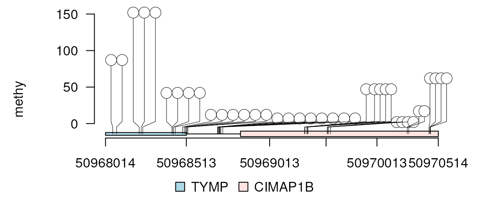
## by set percentage for features and non-features segments
xaxis <- c(50968014, 50968514, 50968710, 50968838, 50970514)
rescale <- c(.3, .4, .3)
lolliplot(methy, features, ranges=gr, type="pin",
rescale = rescale, xaxis = xaxis)
## by set data.frame to rescale
rescale <- data.frame(
from.start = c(50968014, 50968515, 50968838),
from.end = c(50968514, 50968837, 50970514),
to.start = c(50968014, 50968838, 50969501),
to.end = c(50968837, 50969500, 50970514)
)
lolliplot(methy, features, ranges=gr, type="pin",
rescale = rescale, xaxis = xaxis)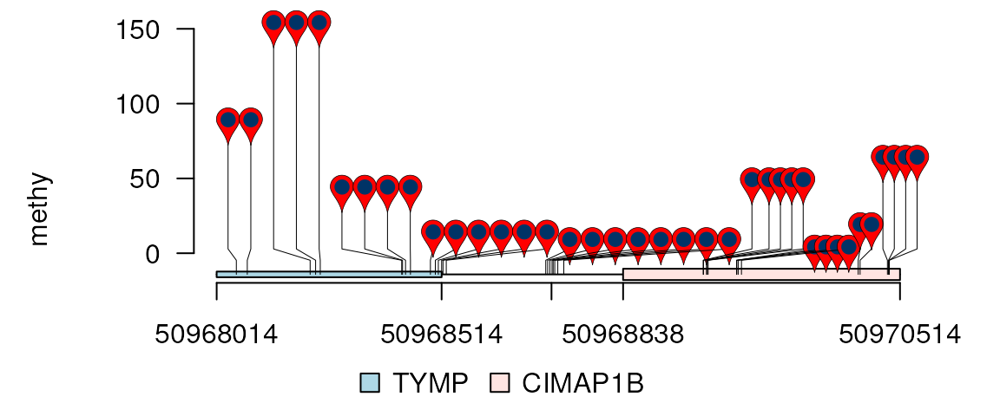
Rescale the region to emphasize exons region only or introns region only. Here “exon” indicates all regions in features.
lolliplot(methy, features, ranges=gr, rescale = "exon")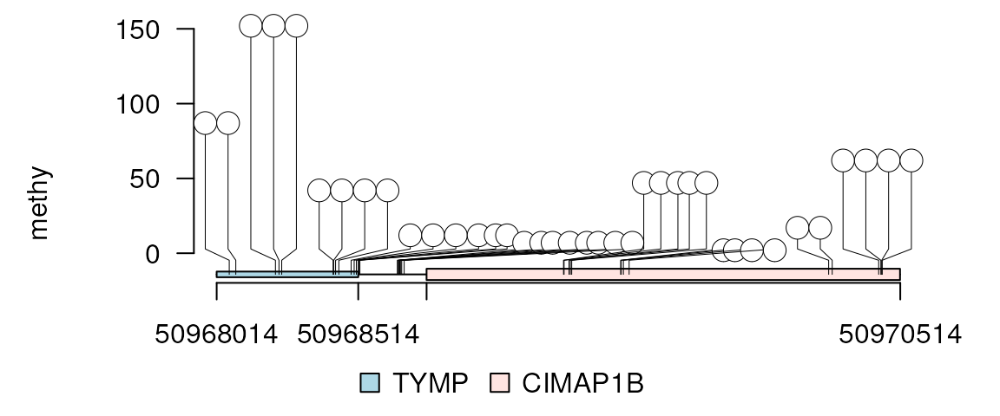
# exon region occupy 99% of the plot region.
lolliplot(methy, features, ranges=gr, rescale = "exon_99")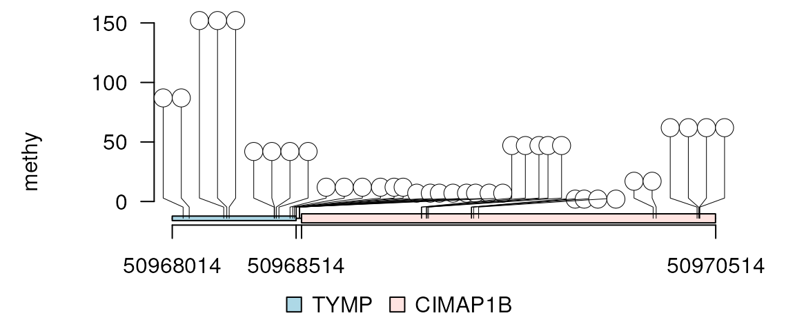
lolliplot(methy, features, ranges=gr, rescale = "intron")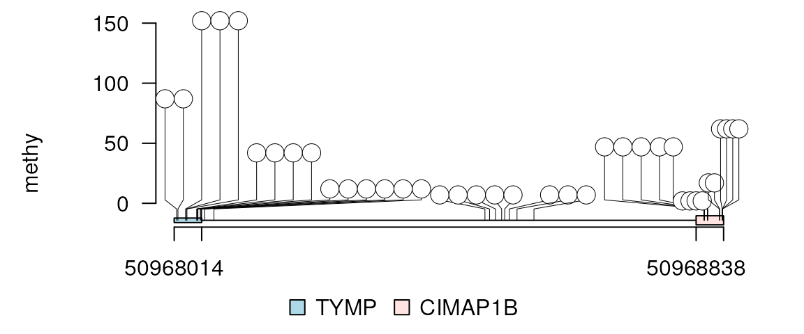
Plot the lollipop plot with the coverage and annotation tracks
gene <- geneTrack(get("HSPA8", org.Hs.egSYMBOL2EG), TxDb.Hsapiens.UCSC.hg19.knownGene)[[1]]
SNPs <- GRanges("chr11", IRanges(sample(122929275:122930122, size = 20), width = 1), strand="-")
SNPs$score <- sample.int(5, length(SNPs), replace = TRUE)
SNPs$color <- sample.int(6, length(SNPs), replace=TRUE)
SNPs$border <- "gray80"
SNPs$feature.height = .1
gene$dat2 <- SNPs
extdata <- system.file("extdata", package="trackViewer",
mustWork=TRUE)
repA <- importScore(file.path(extdata, "cpsf160.repA_-.wig"),
file.path(extdata, "cpsf160.repA_+.wig"),
format="WIG")
fox2 <- importScore(file.path(extdata, "fox2.bed"), format="BED",
ranges=GRanges("chr11", IRanges(122830799, 123116707)))
optSty <- optimizeStyle(trackList(repA, fox2, gene), theme="col")
trackList <- optSty$tracks
viewerStyle <- optSty$style
gr <- GRanges("chr11", IRanges(122929275, 122930122))
setTrackStyleParam(trackList[[3]], "ylabgp", list(cex=.8))
vp <- viewTracks(trackList, gr=gr, viewerStyle=viewerStyle)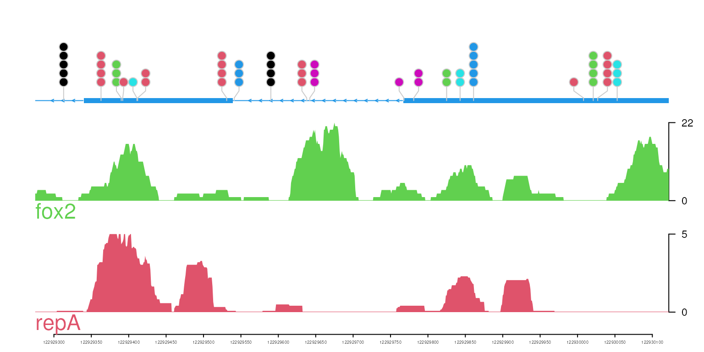
## lollipopData track
SNPs2 <- GRanges("chr11", IRanges(sample(122929275:122930122, size = 30), width = 1), strand="-")
SNPs2 <- c(SNPs2, promoters(gene$dat, upstream = 0, downstream = 1))
SNPs2$score <- sample.int(3, length(SNPs2), replace = TRUE)
SNPs2$color <- sample.int(6, length(SNPs2), replace=TRUE)
SNPs2$border <- "gray30"
SNPs2$feature.height = .1
lollipopData <- new("track", dat=SNPs, dat2=SNPs2, type="lollipopData")
gene <- geneTrack(get("HSPA8", org.Hs.egSYMBOL2EG), TxDb.Hsapiens.UCSC.hg19.knownGene)[[1]]
optSty <- optimizeStyle(trackList(repA, lollipopData, gene, heightDist = c(3, 3, 1)), theme="col")
trackList <- optSty$tracks
viewerStyle <- optSty$style
gr <- GRanges("chr11", IRanges(122929275, 122930122))
setTrackStyleParam(trackList[[2]], "ylabgp", list(cex=.8))
vp <- viewTracks(trackList, gr=gr, viewerStyle=viewerStyle)
addGuideLine(122929538, vp=vp)
## plot with customized geneTrack
dat <- gene$dat
mcols(dat) <- NULL
dat <- subsetByOverlaps(dat, gr)
dat$feature <- 'exon' # feature is required
dat$featureID <- paste0('name', seq_along(dat)) # treat each as single exon gene
dat$color <- sample(seq.int(7), length(dat), replace = TRUE) # set the color
dat$height <- sample(c(0.5, 1, 2), length(dat), replace = TRUE) # set the height
dat$hide_label <- TRUE # do not add labels to the block
gene <- new('track', dat=dat, dat2=SNPs, type='gene', name='a name')
optSty <- optimizeStyle(trackList(fox2, gene), theme="col")
trackList <- optSty$tracks
viewerStyle <- optSty$style
vp <- viewTracks(trackList, gr=gr, viewerStyle=viewerStyle)
Session Info
R version 4.4.1 (2024-06-14) Platform: x86_64-pc-linux-gnu Running under: Ubuntu 22.04.4 LTS
Matrix products: default BLAS: /usr/lib/x86_64-linux-gnu/openblas-pthread/libblas.so.3 LAPACK: /usr/lib/x86_64-linux-gnu/openblas-pthread/libopenblasp-r0.3.20.so; LAPACK version 3.10.0
locale: [1] LC_CTYPE=en_US.UTF-8 LC_NUMERIC=C
[3] LC_TIME=en_US.UTF-8 LC_COLLATE=en_US.UTF-8
[5] LC_MONETARY=en_US.UTF-8 LC_MESSAGES=en_US.UTF-8
[7] LC_PAPER=en_US.UTF-8 LC_NAME=C
[9] LC_ADDRESS=C LC_TELEPHONE=C
[11] LC_MEASUREMENT=en_US.UTF-8 LC_IDENTIFICATION=C
time zone: Etc/UTC tzcode source: system (glibc)
attached base packages: [1] grid stats4 stats graphics grDevices utils datasets [8] methods base
other attached packages: [1] motifStack_1.49.1
[2] httr_1.4.7
[3] VariantAnnotation_1.51.0
[4] Rsamtools_2.21.1
[5] Biostrings_2.73.1
[6] XVector_0.45.0
[7] SummarizedExperiment_1.35.1
[8] MatrixGenerics_1.17.0
[9] matrixStats_1.4.0
[10] org.Hs.eg.db_3.19.1
[11] TxDb.Hsapiens.UCSC.hg19.knownGene_3.2.2 [12]
GenomicFeatures_1.57.0
[13] AnnotationDbi_1.67.0
[14] Biobase_2.65.1
[15] rtracklayer_1.65.0
[16] trackViewer_1.41.6
[17] GenomicRanges_1.57.1
[18] GenomeInfoDb_1.41.1
[19] IRanges_2.39.2
[20] S4Vectors_0.43.2
[21] BiocGenerics_0.51.1
loaded via a namespace (and not attached): [1] BiocIO_1.15.2
bitops_1.0-8
[3] filelock_1.0.3 R.oo_1.26.0
[5] tibble_3.2.1 XML_3.99-0.17
[7] rpart_4.1.23 DirichletMultinomial_1.47.0 [9] lifecycle_1.0.4
httr2_1.0.3
[11] pwalign_1.1.0 lattice_0.22-6
[13] ensembldb_2.29.1 MASS_7.3-61
[15] backports_1.5.0 magrittr_2.0.3
[17] Hmisc_5.1-3 sass_0.4.9
[19] rmarkdown_2.28 jquerylib_0.1.4
[21] yaml_2.3.10 grImport2_0.3-3
[23] Gviz_1.49.0 DBI_1.2.3
[25] CNEr_1.41.0 RColorBrewer_1.1-3
[27] ade4_1.7-22 abind_1.4-5
[29] zlibbioc_1.51.1 R.utils_2.12.3
[31] AnnotationFilter_1.29.0 biovizBase_1.53.0
[33] RCurl_1.98-1.16 pracma_2.4.4
[35] nnet_7.3-19 rappdirs_0.3.3
[37] GenomeInfoDbData_1.2.12 grImport_0.9-7
[39] seqLogo_1.71.0 BiocStyle_2.33.1
[41] annotate_1.83.0 pkgdown_2.1.0
[43] codetools_0.2-20 DelayedArray_0.31.11
[45] xml2_1.3.6 tidyselect_1.2.1
[47] UCSC.utils_1.1.0 BiocFileCache_2.13.0
[49] base64enc_0.1-3 GenomicAlignments_1.41.0
[51] jsonlite_1.8.8 Formula_1.2-5
[53] systemfonts_1.1.0 tools_4.4.1
[55] progress_1.2.3 ragg_1.3.2
[57] strawr_0.0.92 TFMPvalue_0.0.9
[59] Rcpp_1.0.13 glue_1.7.0
[61] gridExtra_2.3 SparseArray_1.5.31
[63] xfun_0.47 dplyr_1.1.4
[65] BiocManager_1.30.25 fastmap_1.2.0
[67] latticeExtra_0.6-30 rhdf5filters_1.17.0
[69] fansi_1.0.6 caTools_1.18.3
[71] digest_0.6.37 R6_2.5.1
[73] textshaping_0.4.0 colorspace_2.1-1
[75] GO.db_3.19.1 poweRlaw_0.80.0
[77] gtools_3.9.5 jpeg_0.1-10
[79] dichromat_2.0-0.1 biomaRt_2.61.3
[81] RSQLite_2.3.7 R.methodsS3_1.8.2
[83] utf8_1.2.4 generics_0.1.3
[85] data.table_1.16.0 prettyunits_1.2.0
[87] InteractionSet_1.33.0 htmlwidgets_1.6.4
[89] S4Arrays_1.5.7 TFBSTools_1.43.0
[91] pkgconfig_2.0.3 gtable_0.3.5
[93] blob_1.2.4 htmltools_0.5.8.1
[95] ProtGenerics_1.37.1 scales_1.3.0
[97] png_0.1-8 knitr_1.48
[99] rstudioapi_0.16.0 reshape2_1.4.4
[101] tzdb_0.4.0 rjson_0.2.22
[103] checkmate_2.3.2 curl_5.2.2
[105] cachem_1.1.0 rhdf5_2.49.0
[107] stringr_1.5.1 parallel_4.4.1
[109] foreign_0.8-87 restfulr_0.0.15
[111] desc_1.4.3 pillar_1.9.0
[113] vctrs_0.6.5 dbplyr_2.5.0
[115] xtable_1.8-4 cluster_2.1.6
[117] htmlTable_2.4.3 evaluate_0.24.0
[119] readr_2.1.5 cli_3.6.3
[121] compiler_4.4.1 rlang_1.1.4
[123] crayon_1.5.3 interp_1.1-6
[125] plyr_1.8.9 fs_1.6.4
[127] stringi_1.8.4 deldir_2.0-4
[129] BiocParallel_1.39.0 txdbmaker_1.1.1
[131] munsell_0.5.1 lazyeval_0.2.2
[133] Matrix_1.7-0 BSgenome_1.73.0
[135] hms_1.1.3 bit64_4.0.5
[137] ggplot2_3.5.1 Rhdf5lib_1.27.0
[139] KEGGREST_1.45.1 highr_0.11
[141] memoise_2.0.1 bslib_0.8.0
[143] bit_4.0.5